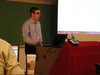

{kind=link}
{kind=link}
 写真3: コンファレンス会場に設定されたSITEビルの外観
写真3: コンファレンス会場に設定されたSITEビルの外観
by 石井達夫(ishii at postgresql.org)
5月21日から24日にかけて，2回目になるPostgreSQLコンファレンスがカナダの オタワで開催された．昨年はカナダのトロントだったので，これで2回続けて カナダで開催されたことになる．
オタワはカナダの首都だが，人口は81万人ほどで，日本で言えば地方都市程度 の規模の街だ．中心部は十分歩いて回ることができ，散策ついでに街の中心を 流れるリドー運河やオタワ川の風景をゆっくりと楽しむことができる．市内に は古い建物が多く，その代表格は国会議事堂だ．
コンファレンスが行われたのはオタワの中心部に程近いオタワ大学．キャンパ スは緑が多く，なかなかよい環境のようだ．オタワは自転車道が充実している せいか，自転車に乗っている人を多く見掛ける．走る場所がなく，自転車が歩 道通行を強いられている日本とは雲泥の差だ．環境に優しい自転車の積極利用 について，もう少し日本の政治家が真剣に考えてくれれば良いのだが...
コンファレンスのすべてのセッションはカフェテリアがある建物の会議室で行 われた．カフェテリアには無線LANと電源が設置，会議室も無線LANが完備して いて，快適この上ない環境だ．
写真3: コンファレンス会場に設定されたSITEビルの外観
コンファレンスで受付を済ますと，バッグやTシャツなどのグッズが渡さ れる．外国のコンファレンスではこれが結構楽しみ．
今回は手提げ袋とTシャツがメインだった．その他Googlから提供されたメモ帳 などもあった．更に直前まで開催していたBSDConの手提げ袋やボールペンも頂 いてしまった(PGConの主催者のDan氏は，地元カナダのBSDコミュニティの大 物で，BSDConの主催者でもある)．
 写真5: PGConとBSDConで配布されたボールペンの数々．一番上のアイスブルー
がPGCon，それ以外は歴代のBSDConで配布されたものらしい
写真5: PGConとBSDConで配布されたボールペンの数々．一番上のアイスブルー
がPGCon，それ以外は歴代のBSDConで配布されたものらしい
写真6: Tシャツの裏には講演者の名前が入る．三谷氏の名前も見える
日本から日本PostgreSQLユーザ会の理事が何名か参加しており，理事の方々が 持参された会報や「カメシール」も受付で配布されていた．
筆者は23日と24日のセミナーセッションに参加した(21と22日はチュートリア ル)．23日はコアメンバーの一人Bruce Momjian氏の基調講演で幕を開けた．ご 存じのように，氏は一貫してPostgreSQL開発プロジェクトのコーディネータ的 役割を果たしており，今回の講演では人類の月着陸のビデオを引用しながら， PostgreSQLのような大規模プロジェクトの運営の難しさを歴史を追って解説し ていた．
基調講演資料はこちら
基調講演の後は，セッションは2トラックに別れ，聞きたいものをチョイスす ることになる．
PostgreSQLは近年エンタープライズ向の性能改良が著しく，とくに8.1以降の SMP(Symmetrical Multi Processor)システムにおけるスケーラビリティの向上 には目を見張るものがある．UNISYSのDoug Tolbert氏によって行われた "Scaling PostgreSQL on SMP Architectures -- An Update"と題したセッショ ンでは，UNISYSの大型Linuxシステム(32プロセッサ)での8.0，8.1，8.2での SMP性能の向上を検証していた．また，PostgreSQL 8.2をベースに，UNISYSが 独自に改良を行ったバージョンの性能について解説していた．
写真9: PostgreSQLのスケーラビリティについて講演を行うDoug Tolvert氏
UNISYSの行った改良はハードウェアに依存する部分もあるので，どこまで一般 的に適用できるのかは未知数の部分もあるが，今後オープンソースで公開され る予定もあるとのことで，期待したい．
講演資料はこちらで公開されている．
"PostgreSQL replication strategies: Understanding High Availability and choosing the right solution"と題したEmmanuel Cecchet氏による講演．
写真10: PostgreSQLのレプリケーションについて講演を行うEmmanuel Cecchet氏
現在手に入る代表的なPostgreSQLのオープンソースクラスタ／レプリケーショ ンソリューションである，pgpool，pgpool-II，PGCluster，PGCluster-II， Slony-I，Sequoiaについて横ならびで比較し，目的に応じて適切なソリューショ ンを選択する手助けにしてもらう，という主旨の講演だ．こうしてみると，取 り上げられた6つのソフトのうち4つまでが日本発のソフトで，ちょっぴり誇ら しい気持になった．
セミナーの聴衆には一般ユーザだけでなく，それぞれのソフトの開発者も多数 見受けられた．"Add node on the fly"(クラスタを構成するDBノードを動的に 追加できるかどうか) の説明に対してPGCluster開発者の三谷氏が自ら突っ込 みを入れ，その場(on the fly)で講演者がOHPを修正する一幕もあり，多いに 会場は盛り上がっていた．
講演資料はこちらで公開されている．
外国のコンファレンスでは飲み物や軽食が提供されることが多い．今回のコン ファレンスでは，朝と午後に飲み物，昼はランチボックスが配布された．朝食 は各自調達となるが，今回は大学のカフェテリアが利用できる環境だったので， 朝食をカフェテリアで頂いた．とても感じの良い女性シェフが丁寧に作ってく れた朝食を頬張りつつ，無線LAN経由でメールを取り込み，今日のセッション の受講計画を立てた．
初日の夕食はEnterpriseDB社提供のディナーパーティがダウンタウンで開催さ れたので，筆者も参加した． おそらく100人近くもの人が参加した大規模なパーティーで，大変な盛況だっ た．
この会場でたまたま前の席に座っていたのがJeff Davis氏． 本家のメーリングリストでは時々みかけるが，お会いするのははじめて．最近 は8.3に向けて"Synchronized Scan"というアイデアを実装中である．
写真13: Synchronized Scanの開発者Jeff Davis氏．日本から持参したシーラカンスをプレゼントした． 最近はpgpoolの開発メーリングリストにも顔を出している．
複数のセッションからバッファに乗りきれないような大きなテーブルを順スキャ ンすると，それぞれのセッションが少ないバッファを奪い合う形になり性能が 出ない．そこでそのような場合にお互いに協調することによって，バッファを 効率よく使おうと言うのが"Synchronized Scan"のアイデアだ．たとえば，あ るセッションでテーブルの1/4 を読み込んでいたら，別のセッションではその 後から読み込むことにして，お互いに読み込み済のデータをうまく活用しよう というアイデアである．
これを考えたDavis氏はPostgreSQL歴こそ6年位だが，すごいのは最初に PostgreSQLに出会ったのが19歳だったというところ．このような若手がばりば りPostgreSQLのエンジンを改良するようなコードを書いているところに欧米の 開発者の層の厚さを感じる．
PGConの最終日24日はまず，"The Road to the XML Type" というセッションに 参加した．発表はPostgreSQLのコアメンバであるPeter Eisentraut氏と，開発 者のNikolay Samokhvalov氏によって行われた．これはPostgreSQL 8.3に向け て開発されているXML対応の現状報告である．
写真14: PostgreSQLのXML対応に関する講演を行うPeter Eisentraut氏(写真左) と，Nikolay Samokhvalov氏(右)
PostgreSQL 8.3では，以下のようなXML対応が行われる予定である．
これらの機能がサポートされることにより，テーブル定義やデータをXMLの形 で出力したり，XMLデータのエレメントに対して問い合わせを発行することが できるようになる．ただし，XQueryのサポートはまだのようだ．
講演資料はこちらで公開されている．
最近のデータベース界の「流行り」の一つに「ストリームデータベース」とい うものがある．ストリームデータベースとは，簡単に言うとデータをハードディ スクなどの記憶装置に蓄積することなくデータ検索を可能にする仕組みである． 検索言語にはSQLを少し拡張したものを使う．
たとえば，以下のような問い合わせでは，過去1秒間の株式の取引額の総額が 連続的に表示される．
SELECT sum(volume) AS volume, advance_agg(qtime) AS windowtime FROM trades < VISIBLE '1 second' ADVANCE '1 second';
ストリームデータベースでは，大量のデータが高速に入力され，一定時間メモ リ上に蓄えられては捨てられていく．ストリームデータベースを使えば，そう したデータに対して，繰り返し問い合わせを行い，あらかじめ設定された条件 を満たしたときに一定のアクションを起す(たとえばある銘柄の株を買う)よう なシステムが容易に構築できる．
ストリームデータベースは，株式の取引データや，センサーからの入力を扱う ような用途に向いている．
本講演では，PostgreSQL開発者のNeil Conway氏が，PostgreSQLをベースに， ストリームデータベースを実装した報告が行われた．このような試みはおそら く世界ではじめてであろう．とても興味深く聴講した．
 写真15: ストリームデータベースに関する講演を行うNeil Conway氏
講演資料はこちらで公開されている．
共有ディスクを前提とした新しいPGClusterの開発報告である．各々独立した ディスク装置を前提としたクラスタに比べると，検索性能だけでなく，更新性 能の向上も期待できると言う．
講演資料はこちらで公開されている．
PGConの締めくくりは，主催者のDan Langille氏が行った．まず書籍や余った グッズが競りにかけられた．会場に置き忘れられたジャケットが競りにかけら れ，持ち主が買い戻す一幕もあって，ユーモアに溢れた楽しいクロージングに なった．
今回で2回目を迎えたPostgreSQL Conferenceだが，開発者のためのお祭りと いう性格は変っていない．開発者は確実に増えており，また若い世代がどんど ん参加してPostgreSQLの開発を本当に楽しんでいることが実感として感じられ， とてもたのもしく思えた．
日本で行われているような，PostgreSQLの使い方や管理，DBアプリケーション の開発に関するセミナーもそれはそれで重要だと思うが，できれば日本でも PostgreSQL Conferenceのような，開発者向のイベントが欲しいと切に思った． そうしたコンファレンスに参加した若手が刺激を受けて，次世代のPostgreSQL を担っていくようになれば最高だ．
{kind=link}
{kind=link}
{kind=link}
{kind=link}
{kind=link}
{kind=link}
{kind=link}
{kind=link}
{kind=link}
{kind=link}
{kind=link}
{kind=link}
{kind=link}